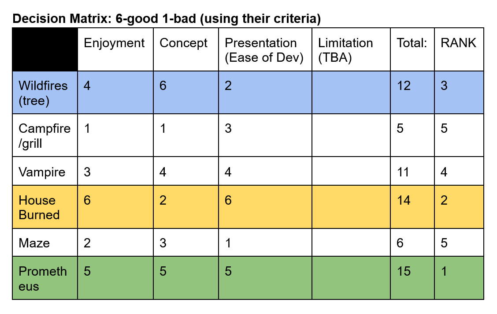

The Gift of Fire
A game made for Mini Jam 218: Fire, with a limitation of only 3 colors
Play in browser
Notes
At the time of this game jam, I had a lot of background in programming and playing video games, but not as much in making them.
To fix this, I decided to join this game jam as a solo developer. To start, I brainstormed different ideas and put the best ones I had onto a decision matrix.
I then evaluated the different ideas and asked another unbiased person for their input. I eventually ended up going with a simple idea that scored the highest on the matrix, prioritizing being able to execute the game in three days.

After I decided what to do, I verified that the concept was able to work with the limitation and moved on to the development process.
I planned out more advanced requirements and things I would want from the game, and ended up creating some prototypes for movement.
Throughout this process I did numerous things I was not fully comfortable with. I created my own art, designed my own game, gameplay, and menu, and created the soundtrack.
After the jam coding window was over, I looked through and rated some of the other games, noting what made the top games so good. After the jam rating period ended, I got my results back, and got 86th out of 127 entries.
Although this doesn't seem like a very high score, for my first game, I was more than happy with that result, and the new knowledge and skills I gained along the way. I look forward to doing more game jams in the future with more experience under my belt.